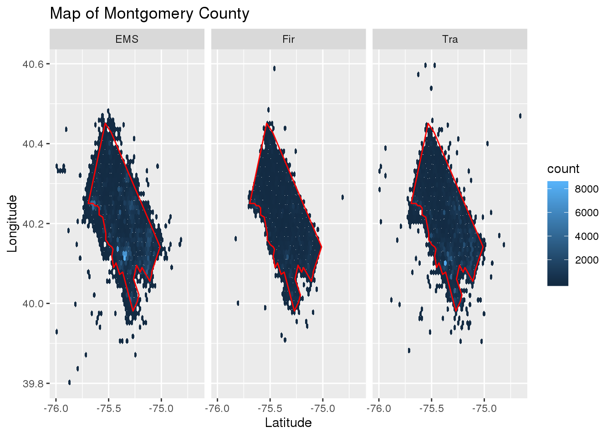
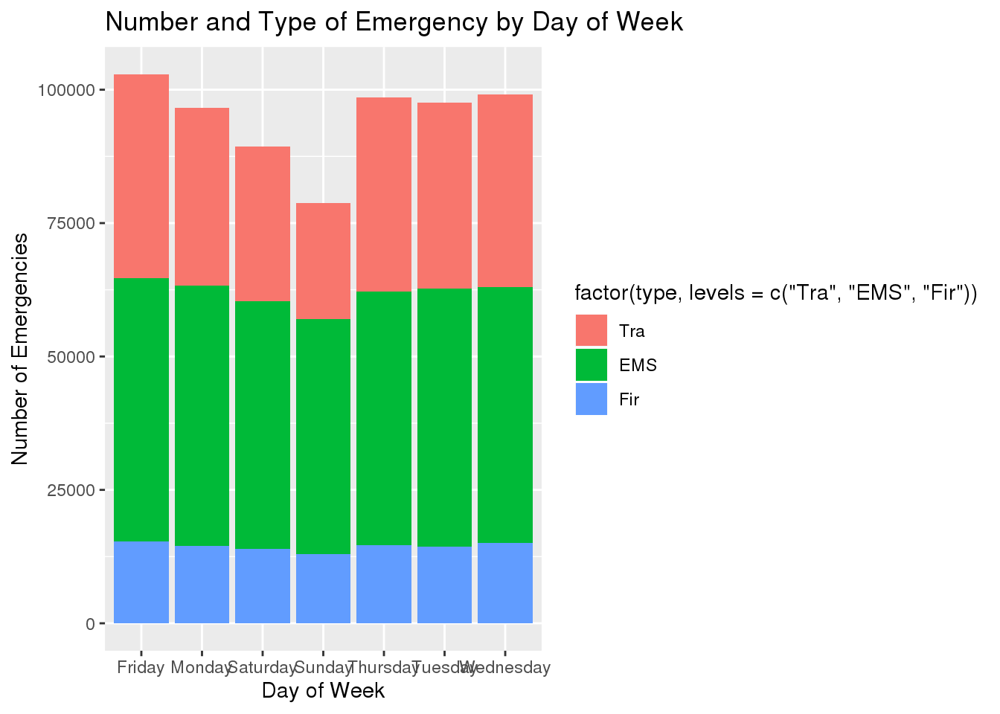

knitr::opts_chunk$set(echo = TRUE, tidy = TRUE)
library(here)
library(ggplot2)
library(tidyverse)
library(readxl)
library(patchwork)
library(rgdal)
library(lubridate)
library(maps)
library(ggmap)
library(mapdata)
data_911 <- read.csv(here("content", "post", "2020-12-07-montgomery-county-911-analysis", "911.csv"))
data_911 <- mutate(data_911, type = substr(title, 1,3))
data_911 <- mutate(data_911, date = as_date(ymd_hms(timeStamp)), time = hms::as_hms(ymd_hms(timeStamp)))
data_911$dow <- weekdays(data_911$date)
data_911 <- data_911 %>%
filter(lat > 39.8 & lat < 40.6) %>%
filter(lng > -76 & lng < -74.5)
data_911_no_nas <- na.omit(data_911)
str(data_911)## 'data.frame': 662953 obs. of 13 variables:
## $ lat : num 40.3 40.3 40.1 40.1 40.3 ...
## $ lng : num -75.6 -75.3 -75.4 -75.3 -75.6 ...
## $ desc : Factor w/ 663282 levels ". ; AMBLER; 2018-04-05 @ 14:35:42;",..: 467158 67539 251193 14378 102372 87032 312838 117579 342883 62923 ...
## $ zip : int 19525 19446 19401 19401 NA 19446 19044 19426 19438 19462 ...
## $ title : Factor w/ 148 levels "EMS: ABDOMINAL PAINS",..: 10 23 104 18 25 42 50 60 69 146 ...
## $ timeStamp: Factor w/ 640754 levels "2015-12-10 14:39:21",..: 10 13 1 6 8 2 5 3 7 16 ...
## $ twp : Factor w/ 69 levels "","ABINGTON",..: 36 20 37 37 30 23 21 49 32 42 ...
## $ addr : Factor w/ 41292 levels ".","10TH AVE",..: 29611 3866 15602 948 6189 5155 19440 7168 21124 3479 ...
## $ e : int 1 1 1 1 1 1 1 1 1 1 ...
## $ type : chr "EMS" "EMS" "Fir" "EMS" ...
## $ date : Date, format: "2015-12-10" "2015-12-10" ...
## $ time : 'hms' num 17:10:52 17:29:21 14:39:21 16:47:36 ...
## ..- attr(*, "units")= chr "secs"
## $ dow : chr "Thursday" "Thursday" "Thursday" "Thursday" ...For this project I am examining the 911 calls data contained in the Emergency – 911 Calls dataset from Kraggle.com, the data was originally provided by montcoalert.org. This dataset contains information about emergency calls made to 911 in Montgomery County Pennsylvania. I believe this dataset to be a subset of a larger dataset that contains all calls made to 911, I think this because there is a column that seems to serve as a flag within the dataset. Upon analyzing the data I hope to be able to determine which area of Montgormery county has the most emergencies, what type of emergency is the most common and determine which day of the week has the most traffic accidents.
Performing exploratory analysis was harder on this data set as most of the variables had hundreds of levels making it such that creating a table would not provide many valuable insights. To make the dataset more usable I edited it slightly using the mutate function, creating a column that only had the main type of emergency (EMS, Fire or Traffic) and did not also contain the further classification. I also divided the time stamp into two separate columns so that it would be easier to analyze and then I used the new date column to produce a new column which was the day of week. The insights that I did gather are as follows: there are three different types of emergencies - EMS (emergency medical services), Fir (fire) and Tra (traffic). Of the three types of emergencies EMS emergencies are the most common followed by traffic and fire. The 911 operator receives the most emergency calls on Fridays and the least on Sundays.
table(data_911$type)##
## EMS Fir Tra
## 332583 100554 229816table(data_911$dow)##
## Friday Monday Saturday Sunday Thursday Tuesday Wednesday
## 102853 96662 89363 78773 98598 97613 99091The first thing I wanted to determine was which area of Montgomery County had the most emergencies. I determined this by making a spatial map using the longitude and latitude and then mapped the emergencies using ggplot and faceting according to type of emergency so I could determine if certain emergencies were more likely to occur in specific parts of the county. When looking at the spatial map it is apparent that emergencies occur all over the county but in the lower left corner there is a higher concentration of emergencies, this likely indicates that a city is located there. When I looked up a map of Montogmery county I was able to determine that most of the emergencies occur in the area near the towns of King of Prussia and Norristown. It was interesting to compare the response distances for the three different types of emergencies. Respondents would react to EMS and traffic emergencies outside the county limits but not fire emergencies.
counties <- map_data("county")
pa_county <- subset(counties, region == "pennsylvania")
mont_county <- subset(pa_county, subregion == "montgomery")
ggplot(data_911) + geom_hex(aes(lng, lat), bins = 60) + geom_polygon(data = mont_county,
aes(x = long, y = lat, group = group), color = "red", fill = NA) + facet_wrap(~type) +
xlab("Latitude") + ylab("Longitude") + ggtitle("Map of Montgomery County")
The second question I wanted to answer was what type of emergency is the most common. I determined this by sorting the data by the title column and then counting the number of occurrences with the same name and then arranging them in descending order. By doing this I was able to ascertain (unsurprisingly) that vehicle accidents are the most common emergency followed by disabled vehicles and fire alarms. I then also looked deeper into the location of the vehicle accidents by filtering and counting the number of vehicle accidents that occur in each zip code. When looking at the generated results there was not one specific zip code that had astronomically more vehicle accidents than another but there was a fair amount of variation in the total number of vehicle accidents per zip code across the various zip codes. I assume that the areas of Montgomery County that are more densely populated will expereince a greater number of vehicle accidents.
data_911_no_nas %>% group_by(title) %>% count() %>% arrange(desc(n))## # A tibble: 144 x 2
## # Groups: title [144]
## title n
## <fct> <int>
## 1 Traffic: VEHICLE ACCIDENT - 125096
## 2 Traffic: DISABLED VEHICLE - 36927
## 3 Fire: FIRE ALARM 36249
## 4 EMS: FALL VICTIM 32757
## 5 EMS: RESPIRATORY EMERGENCY 32497
## 6 EMS: CARDIAC EMERGENCY 30485
## 7 EMS: SUBJECT IN PAIN 18598
## 8 Traffic: ROAD OBSTRUCTION - 18504
## 9 EMS: HEAD INJURY 17419
## 10 EMS: VEHICLE ACCIDENT 15766
## # … with 134 more rowsdata_911_no_nas %>% filter(title == "Traffic: VEHICLE ACCIDENT -") %>% group_by(zip) %>%
count() %>% arrange(desc(n))## # A tibble: 122 x 2
## # Groups: zip [122]
## zip n
## <int> <int>
## 1 19401 7556
## 2 19446 6764
## 3 19464 6160
## 4 19403 6076
## 5 19406 5523
## 6 19002 4991
## 7 19454 4921
## 8 19090 4422
## 9 19468 3986
## 10 19046 3736
## # … with 112 more rowsThe final question I wanted to answer was to visually determine which day of the week had the most emergencies. I did this by sorting the data by day or week and then plotting that on a bar chart and filling the bars with the correct percentage of each type of emergency in comparison to the total number of emergencies that occurred that day. By looking at the bar chart I was able to deduce that the most emergencies occur on Fridays and the least on Sundays. Across all seven days it seems that the number of EMS emergencies and fires stay relatively constant and that traffic emergencies are the main cause of the variation in total emergencies per day.
data_911 %>% group_by(dow) %>% ggplot(aes(dow, e, fill = factor(type, levels = c("Tra",
"EMS", "Fir")))) + geom_bar(stat = "identity") + xlab("Day of Week") + ylab("Number of Emergencies") +
ggtitle("Number and Type of Emergency by Day of Week")
There were a few structural challenges with this dataset as some of the columns originally contained too much information - combining date and time or multiple levels of emergency classification. To combat these challenges I had to manipulate and resort the data using the mutate function before I analyzed it. There was also an issue with some of the longitude and latitude coordinates not corresponding with the location of the data - some of the coordinates for locations outside of the United States, so I had to delete those rows of data before developing the spatial map as it greatly skewed my results. I think it would have been interesting if the dataset had included a column regarding response time, so the time between when the call was received and when the response team arrived at the emergency. I think it could prove insightful to see if various kinds of emergencies produced different response times.
This dataset did not produce many surprising insights, most of the results produced by the analysis were the answers you would have expected after thinking about the question. The most common type of emergency was vehicle accidents and Fridays were the day when the most emergencies occurred. I did find it interesting that the number of EMS emergencies and fires remained relatively constant across the entire week and it was traffic emergencies that was mostly responsible for the variation in total emergencies we see for each day. I found the spatial map extremely interesting, it was cool to see that you could draw assumptions regarding population density given the number of emergencies that occurred in a specific area.